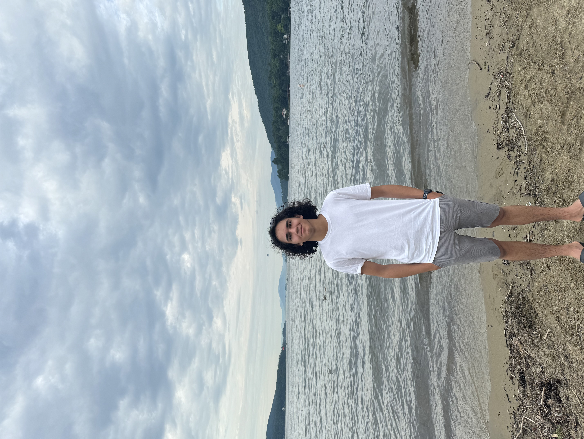

About

I'm a high school senior at Staten Island Technical High School, exploring how machine learning can solve pressing environmental challenges.
My journey started with a question: How can we use satellite data to save lives during disasters? This led to developing AI models for flood mapping that help emergency managers make faster decisions.
Research Interests
- • Machine Learning & Computer Vision
- • Climate Science & Disaster Response
- • Environmental Data Analysis
- • AI Ethics & Policy
Technical Skills
Python
TensorFlow
PyTorch
Java
JavaScript
SQL
Vue/Nuxt

Medical Science Liaison Society Annual Conference 2025, Miami

Cornell HS Computing Competition 2024